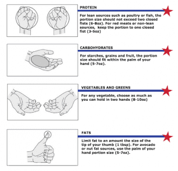

Sponsored Article is ROK's official account that publishes sponsored articles from advertisers. If you are interested hiring a sponsored article for your site, product, or service, visit our advertising page.


The following article was sponsored by Mark Mcilyar
My name is Mark Mcilyar, I’m the senior trainer at the number one most subscribed fitness channel on YouTube.
And as the senior trainer, I know a thing or two about getting older…
One of the biggest challenges for us older guys is to stop our fat burning metabolism from plummeting.
And if you didn’t know, one of the main reasons for this metabolic drop is because your body is producing more of the female hormone – Estrogen.
Your estrogen can get so high that according to USA TODAY, ‘by midlife, a man may have far more estrogen than his postmenopausal wife… That’s part of the reason why heavy-set men sometimes develop swollen breast tissue.’
And because your hormone levels change so slowly, sometimes taking years and even decades, you probably won’t even notice the changes until it’s too late.
This is what happened to me and I didn’t notice until I was 48.
After seeing a picture a friend took of me, I realized I had an extra 20 pounds of belly fat on my waist.
Now most men don’t realize this but belly fat can actually cause your body to produce more estrogen. And the more estrogen you have, the more you’ll struggle to be yourself.
Estrogen is responsible for things you don’t want…
And it doesn’t stop there… because as your belly fat and estrogen go up, your test levels get shut down!
That’s why it’s important to stop estrogen from rising, and to focus on keeping your testosterone at peak levels. Testosterone will keep your metabolism high which burns fat.
It will also…
And here are some ways that you can keep your estrogen low and your T high:
Many guys either don’t drink or they go all out when they do… and this can cause low test and an estrogen boost. The ingredients used to make liquor, wine and beer come from plants and grains that contain phytoestrogens (plant estrogens). Phytoestrogens make your brain think you have high estrogen…and add fat.
Tips to reduce drinking – Set yourself a budget at the beginning of the night, and don’t spend more than the cash in your wallet.This will save you a ton of money and save your testosterone.
Too much of any type of food (protein, carbs, fats, etc) don’t leave room for the necessary nutrients needed for testosterone synthesis. It’s important to get a good balance of meats, veggies, fruits and hydration for optimal T production. My meals look pretty close to this each day:
Here’s another ‘handy’ shortcut – use your ‘hand portion’ reference chart as you put these meals together yourself.
You don’t need to bother with getting a scale, measuring and weighing each and every portion – Just remember that two closed fists is approximately 6-8 oz of protein, the palm of your hand is approximately 3-5 oz of carbohydrates and your thumb will equal 1 serving of fat. When it comes to veggies, feel free to grab a handful or two. This hand portion reference will save you a lot of time as you begin to implement more of these meals.

But the fastest and most effective way to build testosterone naturally is…
Compound movements are training exercises that use multiple muscle groups at the same time.
The most common compound movements are the squat, deadlift and bench press.
These compound movements are effective but they can also be hard on your joints… so if you’ve had a back or knee injury, you’ll want to start out with very light weight until you build strength and reduce pain. And most importantly make sure you are doing them with proper from.
Now if you don’t know how to do them, or just not 100% sure if you are doing them right… go ahead and check out this free video I just posted showing you exactly how to perform the most effective testosterone boosting exercises.
In addition to that, you’ll also learn how older guys like us can perform compound exercises to increase testosterone production naturally without getting injured.
And here are some examples of pre-workout Dynamic Stretching — Hold each posture 15-30 seconds on both sides (Repeat at least 3x):
Hip circles

Leg swings (forward and backwards)

Leg swings (side to side)

Side bends
Arm circles
These warm ups will help prevent injuries while you perform the unique compound movements that will naturally boost your testosterone today.
Train smart,
Mark